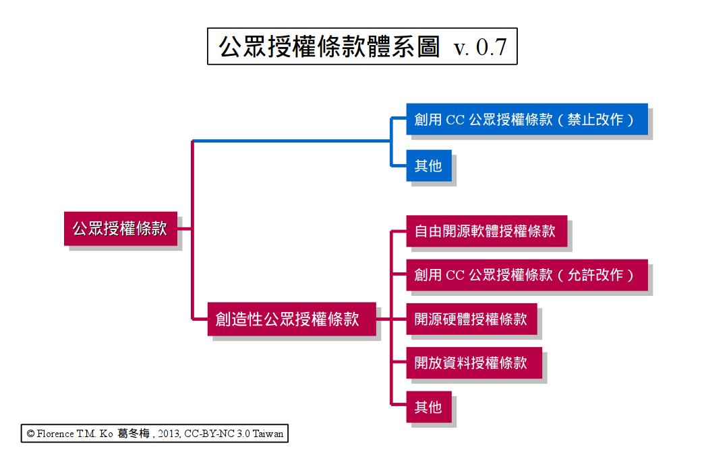

試論「公眾授權條款」之名詞辯析與基礎概念

由於本篇文章將會綜合討論不同領域的授權條款，以及比較著作權與專利權的不同之處，這些條款的內容與權利的態樣均不完全相同，但囿於篇幅，筆者無法詳細介紹其中所有的相關內容，因此在相關段落中，還請讀者自行參閱引註當中的延伸資訊，在此先行說明。
【「公眾授權條款」一詞被普遍地利用】
若是我們從最基本的 Google 搜尋開始，來觀察目前「公眾授權條款」一詞在網路上被使用的狀況，可以發現在所搜尋到的網頁中，多是直接利用「公眾授權條款」一詞而未有內涵上的說明，以下列舉出幾項較具代表性的網頁與文章（註一）：
1、論公眾授權條款之相容性：以創用CC 授權條款及 GNU 自由文件授權條款為例
上篇：https://creativecommons.tw/in-depth/444
下篇：https://creativecommons.tw/in-depth/446
此為學術專論文章，專門探討創用CC（註二）與 GNU Free Documentation License（GFDL，註三）這兩種適用於文件的授權條款，彼此間相容性的議題。在文章標題與內文中，作者直接採用「公眾授權條款」一詞作為上位概念，來涵蓋統稱創用CC 授權條款與 GFDL。
2、「中央研究院漢字部件檢字系統」2.65 版釋出聲明
https://cdp.sinica.edu.tw/cdphanzi/declare.htm
這是中央研究院資訊科學研究所的文獻處理實驗室，所釋出的一套中文漢字構字系統。軟體系統程式碼方面採用 "GNU General Public License 3.0 (GPL-3.0)" 來授權，這份授權條款的中譯名即為「GNU 公眾授權條款 3.0 版本」（註四）。
3、開放研討系列之一：大眾協作與公眾授權、自由軟體與授權條款簡介
https://registrano.com/events/e7ddc8
這是中央研究院資訊科學研究所的開放空間地理資訊小組，在今年（102 年）所舉辦的系列研討會，內容與開放資料、自由開源軟體的結合應用相關，其中說明授權條款為主軸的第一場研討會，即採用了「公眾授權」這個名稱。
4、從革奴大眾公有版權 (GPL) 看資訊產業的未來
https://user.frdm.info/ckhung/a/c_83.php
此為洪朝貴教授的文章，該文章在 1998 年底便完成並公開發表，文中討論到 GPL 這份授權條款，最初作者是以「革奴大眾公有版權」來作為 GPL 的中譯名，但是在 15 年後的 2013 年初，洪教授卻將後續文章中 GPL 的中譯名改為「革奴公眾授權」。從洪教授此一名詞的替換，可以合理推測，「公眾授權」這一名詞的使用近年在台灣愈見主流與普遍。
【「公眾授權條款」概念範圍廣泛】
以上所引用的相關資訊有專業文章、授權聲明、演講活動與個人網誌心得，而這些內容幾乎都與自由開源軟體（註五）及創用CC 授權條款有關，前者以釋出軟體程式碼為主，而後者以釋出程式碼以外的著作內容為主，例如文章、音樂、圖畫與照片等等。
觀察這些「公眾授權條款」的授權特性，可以發現其中最大的特點就是沒有特定的授權對象，也就是社會大眾中的任何一個人，均可以根據授權條款的規則來利用作者所釋出的作品，就作品的「使用端」來看，並不會因為身份、工作單位或者居住的地區而有所分別。
其次，大部分的授權規定是以著作權為主，不過個別的細部規則並不相同，例如：所有的自由開源軟體授權條款，均允許使用者可以直接使用軟體程式，此外也允許使用者直接修改、重製與散布該軟體程式；但是像創用CC 中的「姓名標示–非商業性-禁止改作」授權條款，雖然可以讓使用者重製與散布該著作內容，但卻沒有將修改內容的權利授予使用者（註六），此外也限制使用者利用的範圍不可以涉及商業利益與直接的金流交換。所以在著作權部份，多數的公眾授權條款之間最基本的共通點是：這些條款均授權使用者可以直接使用、重製與散布著作內容，但是其他授權細項則會有所差異。
值得一提的是，近年一些新近制定的自由開源軟體授權條款中，也將專利授權的相關規定納入到條款中，這些規定的大意是，當程式的創作人或貢獻者，將其已擁有或未來打算申請的專利技術寫入到軟體程式當中，並以自由開源軟體的授權方式釋出該程式時，依照這些新近條款的規定，使用者在依條款規則利用程式碼的範圍之內，也可以合法利用這些專利技術，而不需要另外再向該程式的創作人與貢獻者取得專利授權。此一專利授權機制，讓自由開源軟體專案的使用者，在利用軟體程式的同時將更有保障，而不需要擔心侵犯到作者的專利權利卻不自知。
行文至此，為了讓讀者可以言簡意賅的了解「公眾授權條款」的基礎概念，筆者下列採用較為通俗的用語，同時加上輔助說明，來呈現所觀察到上述「公眾授權條款」使用範例的統合概念：「公眾授權條款」是指，將一項作品或產品相關的智慧財產權利，在無償地基礎下授權給願意接受授權規則的不特定社會大眾的授權條款，使用者接受這些授權規則時並不需要書立額外的紙本文件，而授權規則至少可以讓作品或產品的使用者，取得閱讀與傳播散布這些授權內容的基本地位。
【「公眾授權條款」以允許複數端點傳散授權內容為基本模式】
在這樣的基礎概念下，「公眾授權條款」是重在基本的資訊傳播散布層面，只要一份授權條款允許不特定的社會大眾可以取得、閱讀、研究以及再次散布這些智慧財產內容，那麼在當代就很容易被稱為「公眾授權條款」的釋出模式。因此各類的自由開源軟體授權條款，會被稱為「公眾授權條款」；而創用CC 機制下的六種授權組合也屬於公眾授權條款，即使其中最嚴格的「姓名標示–非商業性–禁止改作」條款禁止著作被修改，也禁止著作被應用於跟商業牟利有關的行為，但是由於透過這份條款授權的作品，仍可以被不特定社會大眾來閱讀與傳散，並且該作品也可以被使用者依原條款續行向其他人進行散布，因此多數評論者同意，此亦屬於「公眾授權條款」的一種類型。
各國政府近來大力支持與扶助的開放資料 (Open Data) 應用模式，由於是將許多經編輯後具著作權保護地位的資料庫 (database)，與純粹不授保護地位的資料集 (dataset) 資訊提供給不特定的社會大眾來接觸與使用，因此亦屬於「公眾授權條款」的一種類型（註七）。此外，與自由開源軟體、創用CC 一脈相承的開源硬體 (Open Source Hardware) 所使用的授權模式，由於是將硬體裝置的構造資訊、電路配置以及其中所應用到的軟體程式碼等智慧財產權，均授權出來給一般社會大眾自由散布與利用，且使用者也可以後續自主的散布這些相關內容，因此也算是「公眾授權條款」的一種類型（註八）；然而，有些硬體資訊雖然一樣是以無償的方式被提供出來，但是僅允許不特定社會大眾瀏覽、研究、參考，卻不容許他人依照這些資訊另外製造出產品，使用者也可能無法後續自主散布相關內容，若真如此，那麼此種方式便是偏向於舊式免費軟體 (Freeware)、共享軟體 (Shareware) 的運用模式，而無法被視為當代擴張讓使用者據以自主閱讀、應用、實施，與傳散的公眾授權模式。
之所以稱免費軟體與共享軟體的提供方式（註九），原則上並不是「公眾授權條款」，因為其程式或作品的提供方式，多是以一個端點散布給多個端點的模式進行，也就是說，雖然不特定社會大眾皆可上網取得這些程式，不過此一下載行為多僅能至該軟體的官方網站進行，使用者在下載這些程式之後，並沒有續行傳散的地位，而當代所謂的公眾授權模式，強調的卻是多個端點散布給多個端點，來強化程式或作品的傳散效率；而再進一步分析，即使部份的免費軟體與共享軟體允許使用者自行傳散，但是使用者仍然無法取得程式源碼，或者其他詳細的智慧財產資料，這也會讓使用者實際上處於僅能執行、但卻無法細部閱讀、研究該程式的狀態，也因此使用者對此程式並不具有完整傳散相關資料的地位，所以免費軟體與共享軟體，便不能被列入當代「公眾授權條款」的運用範疇。
【「創造性公眾授權條款」促進創意的發揮與實踐】
另外值得補充說明的是，當代的「公眾授權條款」之中，不僅允許智慧財產內容在特定條件下能被重製與傳散，有些條款還允許一般社會大眾延伸應用，甚至允許使用者據以實際製造出商用產品，例如：在創用CC 授權條款中，除了帶有「禁止改作」特性的二款授權條款之外，其餘四款均允許使用者自由修改著作以及散布修改後的衍生著作；而前段所提到的開源硬體授權條款，除了將硬體構造與其組裝資訊提供給社會大眾進行傳散與修改之外，任何取得這些資料之人，還可以利用這些資料來自行製造相關裝置，而不需要另外取得權利人額外的書面同意；而著名的自由開源軟體，其各類的授權條款更是以允許使用者自由修改、產生衍生程式來作為授權規則的基石。
本段所列這些條款的特性基本上是承襲自由軟體 (Free Software) 中四大自由的精神而來（註十），而四大自由的核心精神是指，身為程式使用者應該擁有使用、研究、修改與散布程式的自由，同時，還有著將這些研究與修改內容回饋給其他開發者與開發社群的自由，以創造出一個程式可以不斷被不特定社會大眾主動積極來研究改良的自由環境。這樣的精神被推廣與落實到程式開發以外的領域中，就成為我們現在所看到的創用CC、開源硬體等新興授權範疇的擴散應用。
而若是深入一層來觀察四大自由精神與隨之遞嬗的衍生授權模式，可以發現，授權條款只是一種工具，透過這樣的工具，可以營造出一個資訊與內容持續被社會大眾主動積極研究改進、同時激發大眾創意被廣泛實踐的自由環境，這樣的研究改進方式，與過往傳統封閉式、僅侷限在特定權利人與被授權人之間的互動方式，是完全不同的，相對來說，容許使用者對釋出內容再行增添修改的「公眾授權條款」，較諸禁止修改與延伸應用的基本「公眾授權條款」更能發揮與落實各種創意，因此筆者取其「創意得以被擴大發揮與實踐」之意，將這類條款稱之為「創造性公眾授權條款」。
除了自由開源軟體、開源硬體以及四款允許改作的創用CC 授權條款之外，原則上開放資料的授權模式也可以被歸類為「創造性公眾授權條款」。因為考察目前各國政府推廣開放資料的運作模式，對於資料的定位，皆為中性客觀數據與其整合的呈現，故本質上開放資料的授權模式若是不允許一般不特定社會大眾修改或延伸應用的話，是為無法想像，因為唯有讓資料是可以讓大眾自由添補與更新，才能讓使用者透過整合不同來源的資料，來發揮與實踐其創意，從這個觀點來看，目前仍在發展中的開放資料授權模式，亦應屬於「創造性公眾授權條款」。
【結語】
綜合以上內容，可以將「公眾授權條款」製成如下的體系圖：

▲ 圖1：公眾授權條款體系圖 v. 0.7
如此可以清楚看到「公眾授權條款」有兩個層次：一個是讓智慧財產內容與資訊，可以透過不同散布端點被廣泛傳散出去的基本公眾授權層次，另外一個則是讓這些內容與資訊可以被延伸應用、激發創意以及將創意實踐出來的創造性公眾授權層次。筆者在最上位的「公眾授權條款」與「創造性公眾授權條款」兩部份，都以桃紅色來表示，是要刻意凸顯「創造性公眾授權條款」的重要性，因為若是從這些條款的發展歷史來看的話，是先有「創造性公眾授權條款」之後，才衍生出其他僅允許傳散、卻不允許修改內容與資訊的變體授權條款。更進一步來說，自由開源軟體授權條款是最早成形的，這類條款全部都是「創造性公眾授權條款」，在受到自由開源理念的影響之後，創用CC 的授權架構才接著被提出來，不過在此同時，也衍生出了禁止改作的創用CC 授權選項，而在此之後，開源硬體、開放資料等授權型態才依次出現。因此「創造性公眾授權條款」，係屬當代「公眾授權條款」重要的本質要素，這類授權條款在傳散內容與資訊的同時，揹負著積極的目的，那就是讓內容與資訊可以被再次利用與創造，以集合群體創意產生更多更新的內容或作品出來。
此篇專文所歸納出的「公眾授權條款」概念仍然相當廣泛，只要是允許不特定社會大眾可以使用與傳散內容或資訊的授權條款，並且同時容許這些內容與資訊透過不同的複數端點自主進行後續傳散，就可以稱之為當代的「公眾授權條款」，但是在此同時，也期許讀者能夠了解到，「創造性公眾授權條款」才是這類條款主體靈魂與精神之所在。筆者希望透過本文的歸納與整理，能有助於大眾對於「公眾授權條款」的概念有進一步的理解，同時也期待具有創造性的公眾授權模式，可以被更為廣泛地應用在更多的領域之中，讓被傳散的內容與資訊能夠被實際地再利用與發揮其創意價值，以讓當代的公眾授權模式，能成功地在不同的領域裡，都建立起創意與實用性能互相增補、良性循環的群體生態系。
----
註一：透過 Google 搜尋功能，可以在網路上找到許多直接利用「公眾授權條款」的資料。而由於在用語上，「條款」兩字有時候會被省略掉，因此在搜尋結果中會看到「公眾授權條款」、「公眾授權」夾雜的狀況。
註二：本文所討論的六款創用CC 授權條款，乃是指以下六款：「姓名標示」、「姓名標示-相同方式分享」、「姓名標示-禁止改作」、「姓名標示-非商業性」、「姓名標示-非商業性-相同方式分享」與「姓名標示-非商業性-禁止改作」。關於創用CC 概念與這六款授權條款的介紹請見：https://creativecommons.tw/explore。
註三：關於 GFDL 的介紹，請參閱：林珈宏，自由軟體說明文件的授權選擇，https://www.openfoundry.org/tw/legal-column-list/2076-2010-07-15-10-22-17。
註四：關於 GPL-3.0 的介紹請參見：葛冬梅，在四大自由精神之下強化的 GPL-3.0，https://www.openfoundry.org/tw/legal-column-list/1108--gpl3。另外關於 GPL 系列條款相關的介紹與說明，可以至 OpenFoundry 的法律源地網站上搜尋相關文章瀏覽：https://www.openfoundry.org/tw/law-and-licensing。
註五：本文所謂的自由開源軟體授權條款是指，被自由軟體基金會 (Free Software Foundation, FSF) 分類為符合四大自由的自由軟體授權條款，或者是被開放源碼促進會 (Open Source Initiative, OSI) 認可發布為開源授權條款的條款。自由軟體與四大自由的介紹，請參閱：四大自由與自由軟體，https://www.openfoundry.org/tw/basic-concepts/1448-2010-07-13-09-56-17；自由軟體授權條款的列表請見：Various Licenses and Comments about Them，https://www.gnu.org/licenses/license-list.html#SoftwareLicenses。開放源碼授權條款列表請見：https://opensource.org/licenses/alphabetical；一份授權條款必須符合開放源碼定義 (Open Source Definition, OSD)，才能被認可成為開源授權條款，開放源碼定義的介紹請參閱：開放源碼定義與開放源碼促進會，https://www.openfoundry.org/tw/basic-concepts/1447-2010-07-13-09-57-12。而關於自由開源軟體的統合基本介紹請參閱：https://www.openfoundry.org/tw/basic-concepts/1450-2010-07-13-09-53-46。
註六：但是為了要讓著作內容在不同媒體或透過不同格式呈現出來，而進行的必要技術上的修改，則是在允許之列，因為這樣的格式轉換程序，並不會被認定為著作權定義下的「改作」行為。
註七：關於開放資料 (Open Data) 概念的介紹，請參閱：林誠夏，從開源軟體到開放資料－論 Open Database License v1.0，https://www.openfoundry.org/tw/legal-column-list/8832-from-open-source-to-open-data-knowing-open-database-license-v10-in-open-source-licensing-way；以及開放知識基金會 (Open Knowledge Foundation, OKF) 所提供的介紹：https://opendatahandbook.org/en/what-is-open-data/index.html。
註八：關於開源硬體 (Open Source Hardware) 的概念，可以參閱：開源硬體協會 (Open Source Hardware Association, OSHWA) 所訂定的開源硬體定義，https://www.oshwa.org/definition/；以及維基百科上面開源硬體的英文條目內容：https://en.wikipedia.org/wiki/Open-source_hardware。
註九：關於共享軟體 (Shareware) 與免費軟體 (Freeware) 的介紹，以及與自由開源軟體的差異，請參閱：自由軟體、開放源碼軟體與相近的名詞，https://www.openfoundry.org/tw/basic-concepts/1450-2010-07-13-09-53-46。
註十：關於自由軟體的四大自由介紹，請參閱：四大自由與自由軟體，https://www.openfoundry.org/tw/basic-concepts/1448-2010-07-13-09-56-17。
OSSF Newsletter : 第 225 期 Android 應用程式開發：如何錄製影片
Tags: 公眾授權, 公眾授權條款, 自由開源軟體, 創用CC, 開放資料, 開源硬體, public license, FOSS, creative commons, creative commons public license, open data, open source hardware, 創造性公眾授權條款,
Category: Legal Column